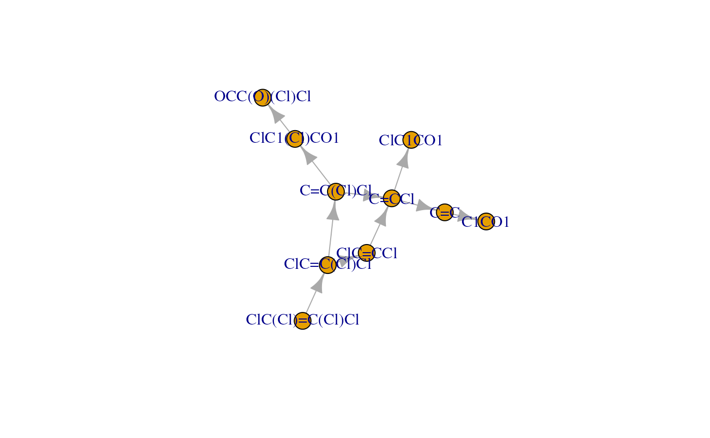

enviPathR
Giulio Benedetti
University of Turkugiulio.benedetti@utu.fi
19 September 2026
Source:vignettes/enviPathR.Rmd
enviPathR.RmdIntroduction
enviPath is a biotransformation database and pathway prediction system focusing on xenobiotic compounds that exacerbate environmental pollution. Although the enviPath resources are accessible via an intuitive website, this approach cannot ensure analytical efficiency and reproducibility. For this, enviPath provides a RESTful API through which both data retrieval and pathway prediction are possible. The current package, enviPathR, offers an R client to the enviPath API and thus brings most of its capabilities to R practitioners studying environmental pollution and organic contaminant biotransformation.
Tutorial
This section outlines how to use enviPathR for several different purposes. If the client interface feels somewhat familiar, that is because it is inspired by KEGGREST, the R client for the KEGG RESTful API. While enabling all resource look-up and pathway prediction functionality, the package currently lacks the API methods for object creation and deletion. That can be added upon request (external contributions are also welcome).
Installation
Bioconductor release version:
if (!requireNamespace("BiocManager", quietly = TRUE))
install.packages("BiocManager")
BiocManager::install("enviPathR")Beta version:
remotes::install_github("enviPath/enviPathR")Then, we can import enviPathR and another couple of optional packages used in this tutorial.
All the following methods are further described in the enviPathR function reference.
epTypes: explore enviPath database structure
enviPath divides its conceptual and biological items into different
object categories, which can be navigated with epTypes.
types <- epTypes()The first element of the output contains a vector of object types
that can be listed and explored with epList.
# View listable object types
print(types$listable)
#> [1] "compound" "package" "pathway" "reaction" "rule" "setting"The second element is a data frame with the available links between
object types that can be retrieved with epLink.
# View linkable object types
kable(types$linkable)| from | to |
|---|---|
| compound | inchikey |
| compound | pathway |
| compound | reaction |
| compound | smiles |
| compound | structure |
| pathway | compound |
| pathway | edge |
| pathway | node |
| pathway | reaction |
| pathway | structure |
| reaction | compound |
| reaction | ec |
| reaction | pathway |
| reaction | rhea |
The graph structure of the database can be visualised by converting the links to an igraph object.
# Convert edges data frame to igraph object
ep_graph <- graph_from_data_frame(types$linkable)
# Visualise database graph
plot(ep_graph)
epLogin: log into an enviPath personal account
It is necessary to hold an enviPath account to use the API and thus
also enviPathR. A free (for academic use) account can be created at the
enviPath website.
The same login credentials can then be passed to epLogin,
which keeps you permanently logged in unless the cached package cookies
are cleared.
# Log into your enviPath account
epLogin(username, password)
#> Hi nature lover, welcome to enviPath!After logging in once, all remaining methods work right out the box.
epList: retrieve lists of objects from enviPath
The available elements for each object type can be explored using
epList.
# List available packages
pkg_df <- epList("package")
# Select reviewed packages
to_keep <- pkg_df$reviewStatus == "reviewed"
pkg_df <- pkg_df[to_keep, ]
# Remove lengthy description
pkg_df$description <- NULL
# View list of packages
kable(pkg_df)| name | id | reviewStatus | Pathways | Rules | Compounds | Reactions | Relative Reasoning | Scenarios | |
|---|---|---|---|---|---|---|---|---|---|
| 3 | Public Prediction Models | 134886bb-b52e-4ad6-91d3-a02cecde6d95 | reviewed | 0 | 0 | 0 | 0 | 3 | 0 |
| 6 | EAWAG-SEDIMENT | f05e38d8-e9b4-4c3e-b0d8-9ab29966eccf | reviewed | 179 | 0 | 810 | 961 | 0 | 1622 |
| 7 | enviPath-PFAS | 87a49584-d937-482c-9c33-25928dcb02a8 | reviewed | 214 | 0 | 590 | 915 | 0 | 288 |
| 9 | EAWAG-SOIL | 5882df9c-dae1-4d80-a40e-db4724271456 | reviewed | 317 | 0 | 2608 | 2445 | 0 | 4881 |
| 11 | EAWAG-SLUDGE | 521c547a-fd2a-491c-ad5b-7eaa1577fb65 | reviewed | 183 | 0 | 1067 | 494 | 0 | 85 |
| 14 | EAWAG-BBD | 32de3cf4-e3e6-4168-956e-32fa5ddb0ce1 | reviewed | 219 | 499 | 1399 | 1480 | 0 | 1915 |
By default, objects are listed from all available packages, but
objects can be listed from a specific package using the argument
pkg. For example, it is possible to retrieve pathways only
from the EAWAG-BBD package by providing its unique identifier.
# Select desired package
pkg_name <- "EAWAG-BBD"
pkg_id <- pkg_df$id[pkg_df$name == pkg_name]
# List pathways from desired package
path_df <- epList("pathway", pkg = pkg_id)
# View list of pathways
path_df |>
head() |>
kable()| name | id | reviewStatus |
|---|---|---|
| Uranium | 259b990e-d653-4201-9282-04f2c6b05ca0 | reviewed |
| 2-Aminobenzenesulfonate | 1e7066c2-ff45-44f4-9086-e37db18400df | reviewed |
| Nicotine | 1e94c7d7-7f3a-42c7-9dd0-eb1ab217d7ec | reviewed |
| 2-Aminobenzoate | dfc8c935-9d73-4067-bfe6-db3501d2075f | reviewed |
| Caffeine | 1d537657-298c-496b-9e6f-2bec0cbe0678 | reviewed |
| Dimethylisophthalate | a0641e14-3811-482f-a366-cc53f893fce4 | reviewed |
Similarly, the other supported enviPath object types can also be
explored this way (see epTypes).
epLink: map between different types of objects
Links between object types can be retrieved with epLink,
which takes the origin and target object types, and optional initial
values with the argument init. The latter is recommended to
prevent the search from exploding.
# Define reaction of interest
rxn_id <- "2b6bbcc5-77f4-4bed-92a9-731cdc978f6a"
# Map desired reaction to related compounds (educts and products)
rxn2cpd <- epLink("reaction", "compound", init = rxn_id)
# View reaction-to-compound mapping
kable(rxn2cpd)| reaction | compound |
|---|---|
| 2b6bbcc5-77f4-4bed-92a9-731cdc978f6a | 7281d994-9f4a-4f7f-9e50-90b131c11da3 |
| 2b6bbcc5-77f4-4bed-92a9-731cdc978f6a | befe8eeb-e8f8-4b4a-90b1-d0584a75f8cb |
Multiple initial values can also be used, so that the output represents a many-to-many mapping.
# Select pathways of interest
path_ids <- path_df$id[1:2]
# Map desired pathways to related compounds (nodes)
path2cpd <- epLink("pathway", "compound", init = path_ids, pkg = pkg_id)
# View pathway-to-compound mapping
kable(path2cpd)| pathway | compound |
|---|---|
| 259b990e-d653-4201-9282-04f2c6b05ca0 | 16af63f9-a560-4347-b1ac-4dc28eb7d794 |
| 259b990e-d653-4201-9282-04f2c6b05ca0 | be6e7708-e0c7-4527-87c0-77229f9874b8 |
| 259b990e-d653-4201-9282-04f2c6b05ca0 | e9511feb-acb6-4a51-94c8-d023c8143c3b |
| 1e7066c2-ff45-44f4-9086-e37db18400df | 571b2ca8-e29a-4496-9a09-5b3174ad9019 |
| 1e7066c2-ff45-44f4-9086-e37db18400df | f2dd6912-097e-47d6-a0aa-8cb2c8ca368b |
| 1e7066c2-ff45-44f4-9086-e37db18400df | d753429b-b3af-4944-97d7-8ddd833e92aa |
Similarly, the other supported enviPath object types can also be
linked this way (see epTypes).
epGet: fetch raw objects from enviPath
It may be useful at times to retrieve raw objects to access their
original properties. This is done with epGet.
# Fetch reaction object
rxn <- epGet("reaction", rxn_id)
# View part of reaction data
rxn |>
head() |>
print()
#> $aliases
#> list()
#>
#> $description
#> [1] "no description"
#>
#> $ecNumbers
#> list()
#>
#> $educts
#> compoundName
#> 1 4-Hydroxybutyraldehyde
#> id
#> 1 https://envipath.org/package/32de3cf4-e3e6-4168-956e-32fa5ddb0ce1/compound/d2c48ebe-5a5a-4f5b-b42e-8ff23c873f6c/structure/7281d994-9f4a-4f7f-9e50-90b131c11da3
#> smiles
#> 1 C(CCO)C=O
#>
#> $id
#> [1] "https://envipath.org/package/32de3cf4-e3e6-4168-956e-32fa5ddb0ce1/reaction/2b6bbcc5-77f4-4bed-92a9-731cdc978f6a"
#>
#> $identifier
#> [1] "reaction"Multiple initial values can also be input to fetch a list of several different objects.
# Fetch multiple pathways
paths <- epGet("pathway", init = path_ids, pkg = pkg_id)
# View part of pathway data
paths |>
lapply(head) |>
print()
#> $`259b990e-d653-4201-9282-04f2c6b05ca0`
#> $`259b990e-d653-4201-9282-04f2c6b05ca0`$aliases
#> list()
#>
#> $`259b990e-d653-4201-9282-04f2c6b05ca0`$completed
#> [1] "true"
#>
#> $`259b990e-d653-4201-9282-04f2c6b05ca0`$description
#> [1] "Uranium (U) is the most common radionuclide contaminant at US Department of Energy facilities (Riley et al., DOE/ER-0547T, 1992). More information on this element can be found at the Web Elements U page. The uranyl ion [U(VI)O2]2+ is a common, soluble form of this element in the environment. Microbes can immobilize uranyl ion in several ways, three of which are shown here. The mineral uraninite, U (IV)O2, is highly insoluble. Microbes can reduce uranyl ion to hydrated uraninite. The reduction can be carried out by a cytochrome-c3 hydrogenase from Desulfovibrio vulgaris ([http://www.ncbi.nlm.nih.gov/pubmed/8285665|Lovley et al., 1993]) and other organisms, as shown in the left-most pathway branch. Reaction A, in the middle branch, can be carried out by Deinococcus radiodurans R1 in the laboratory with concomitant oxidation of the humic acid analog anthranhydroquinone-2,6-disulfonate (AQDSH2) to its quinone form ([http://www.ncbi.nlm.nih.gov/pubmed/10788374|Fredrickson et al., 2000]). Humic acid, a brown-colored mixture of polymers, found in lignite, peat, and soils, is assumed to be the environmental cofactor. Uranyl ion can be precipitated as cell-bound hydrogen uranyl phosphate without change in oxidation state of the uranium, as shown in the right-most pathway branch. This reaction is facilitated by acid phosphatase N from Citrobacter sp. N14 ([http://www.ncbi.nlm.nih.gov/pubmed/9763695|Basnakova et al., 1998])."
#>
#> $`259b990e-d653-4201-9282-04f2c6b05ca0`$id
#> [1] "https://envipath.org/package/32de3cf4-e3e6-4168-956e-32fa5ddb0ce1/pathway/259b990e-d653-4201-9282-04f2c6b05ca0"
#>
#> $`259b990e-d653-4201-9282-04f2c6b05ca0`$isIncremental
#> [1] FALSE
#>
#> $`259b990e-d653-4201-9282-04f2c6b05ca0`$isPredicted
#> [1] FALSE
#>
#>
#> $`1e7066c2-ff45-44f4-9086-e37db18400df`
#> $`1e7066c2-ff45-44f4-9086-e37db18400df`$aliases
#> list()
#>
#> $`1e7066c2-ff45-44f4-9086-e37db18400df`$completed
#> [1] "true"
#>
#> $`1e7066c2-ff45-44f4-9086-e37db18400df`$description
#> [1] "Many aromatic sulfonates are produced on a multi-ton scale and can be detected in the environment. Hundreds of thousands of kilograms of 2-aminobenzenesulfonic acid are produced for use in the U.S. annually. It is used in organic synthesis and in the manufacture of various dyes and medicines. The initial step in the degradation of 2-aminobenzenesulfonate involves the transport of the compound across the outer membrane of the cell. Alcaligenes sp. O-1 has a selective permeability barrier, allowing three aromatic sulfonates (benzene sulfonate, toluene-4-sulfonate, and 2-aminobenzenesulfonate) to pass through, as described by [http://www.ncbi.nlm.nih.gov/pubmed/8075807|Junker et al. (1994)]. Cell extracts of this species were shown to be capable of degrading at least seven substrates. Deamination of the aromatic ring in strain O-1 has been shown by [http://www.ncbi.nlm.nih.gov/pubmed/8002948|Junker et al. (1994)] to precede desulfurization. Desulfurization of the compound has been shown to precede deamination when degraded by other organisms."
#>
#> $`1e7066c2-ff45-44f4-9086-e37db18400df`$id
#> [1] "https://envipath.org/package/32de3cf4-e3e6-4168-956e-32fa5ddb0ce1/pathway/1e7066c2-ff45-44f4-9086-e37db18400df"
#>
#> $`1e7066c2-ff45-44f4-9086-e37db18400df`$isIncremental
#> [1] FALSE
#>
#> $`1e7066c2-ff45-44f4-9086-e37db18400df`$isPredicted
#> [1] FALSEIt is also possible to extract specific properties from certain
object types with the argument property. These include
pathway edges and nodes and compound structures.
# Extract node property from pathway objects
nodes <- epGet("pathway", init = path_ids, pkg = pkg_id, property = "node")
# View nodes
print(nodes)
#> $`259b990e-d653-4201-9282-04f2c6b05ca0`
#> $`259b990e-d653-4201-9282-04f2c6b05ca0`$node
#> id
#> 1 https://envipath.org/package/32de3cf4-e3e6-4168-956e-32fa5ddb0ce1/pathway/259b990e-d653-4201-9282-04f2c6b05ca0/node/dd59cd8c-6e19-4dec-b119-47595607776e
#> 2 https://envipath.org/package/32de3cf4-e3e6-4168-956e-32fa5ddb0ce1/pathway/259b990e-d653-4201-9282-04f2c6b05ca0/node/f06d31fa-d9fe-470d-b1b8-72237d1f96e1
#> 3 https://envipath.org/package/32de3cf4-e3e6-4168-956e-32fa5ddb0ce1/pathway/259b990e-d653-4201-9282-04f2c6b05ca0/node/b36d17e7-e73f-47f7-8136-b5f357fa7e26
#> name reviewStatus identifier
#> 1 Hydrogen uranyl phosphate reviewed node
#> 2 Uraninite reviewed node
#> 3 Uranyl ion reviewed node
#>
#>
#> $`1e7066c2-ff45-44f4-9086-e37db18400df`
#> $`1e7066c2-ff45-44f4-9086-e37db18400df`$node
#> id
#> 1 https://envipath.org/package/32de3cf4-e3e6-4168-956e-32fa5ddb0ce1/pathway/1e7066c2-ff45-44f4-9086-e37db18400df/node/85cfcbd7-1f89-49b9-a3a6-725a54920a01
#> 2 https://envipath.org/package/32de3cf4-e3e6-4168-956e-32fa5ddb0ce1/pathway/1e7066c2-ff45-44f4-9086-e37db18400df/node/9838a66c-c9c1-4155-a5cc-5c4705dd817c
#> 3 https://envipath.org/package/32de3cf4-e3e6-4168-956e-32fa5ddb0ce1/pathway/1e7066c2-ff45-44f4-9086-e37db18400df/node/739d1209-f196-4038-99df-d92423c94b06
#> name reviewStatus identifier
#> 1 3-Sulfocatechol reviewed node
#> 2 2-Aminobenzenesulfonate reviewed node
#> 3 2-Hydroxymuconate reviewed node
epModel: predict compound biotransformation
pathways
enviPath provides a set of pre-trained models for chemical fate
prediction and half-life persistence of both known and unknown compounds
given their SMILES representation. The available models can be retrieved
with epList.
| name | id |
|---|---|
| Global Setting - enviFormer | 1d915a48-286a-4394-9693-bfaa187326a5 |
| Global Setting - ECC and App Domain | 3c8e789f-cf5f-4db2-9b77-b152d32e52e9 |
| Global Setting - ECC and App Domain - PEPPER | 3cda8e56-f4ff-47a8-b68c-4cfcfc4e8c2a |
| Global Setting - BBD Rules | a0fbc3d8-ca45-44f1-9c3c-80d8531ffe25 |
Pathway prediction is performed with epModel, which uses
the enviFormer model by default. The output list contains two data
frames representing the nodes (compounds) and edges (reactions) of the
predicted pathway, respectively.
# Define smiles of interest
smiles <- "ClC(Cl)=C(Cl)Cl"
# Perform pathway prediction with enviFormer
former_out <- epModel(smiles)
# View compounds in predicted pathway
kable(former_out$nodes)| id | name | depth |
|---|---|---|
| 0 | ClC(Cl)=C(Cl)Cl | 0 |
| 1 | O=C(O)C(Cl)Cl | 1 |
# View reactions in predicted pathway
kable(former_out$edges)| from | to | probability | multiGenProbability |
|---|---|---|---|
| 0 | 1 | 0.217735 | 0.217735 |
Different model settings can be specified with the argument
setting. For example, the PEPPER model can be used which
also returns half-lime estimates for the predicted degradation
steps.
# Set id for PEPPER model setting
set_name <- "Global Setting - ECC and App Domain - PEPPER"
set_id <- set_df$id[set_df$name == set_name]
# Perform pathway prediction with PEPPER
pepper_out <- epModel(smiles, set_id)
# View compounds in predicted pathway
kable(pepper_out$nodes)| id | name | depth |
|---|---|---|
| 0 | ClC(Cl)=C(Cl)Cl | 0 |
| 1 | ClC=C(Cl)Cl | 1 |
| 2 | C=C(Cl)Cl | 2 |
| 3 | ClC=CCl | 2 |
| 4 | C=CCl | 3 |
| 5 | ClC1(Cl)CO1 | 3 |
| 6 | C=C | 4 |
| 7 | ClC1CO1 | 4 |
| 8 | OCC(O)(Cl)Cl | 4 |
| 9 | C1CO1 | 5 |
# View reactions in predicted pathway
kable(pepper_out$edges)| from | to | probability | multiGenProbability | ruleId | ruleName |
|---|---|---|---|---|---|
| 2 | 5 | 0.2500000 | 0.0291493 | b7d77873-65b8-4164-9349-b8e7da31dcd6 | bt0049 |
| 6 | 9 | 0.2500000 | 0.0033987 | b7d77873-65b8-4164-9349-b8e7da31dcd6 | bt0049 |
| 1 | 3 | 0.3414634 | 0.1165973 | af13a678-1d06-402c-ae13-cb00f8830af4 | bt0029 |
| 2 | 4 | 0.3414634 | 0.0398137 | af13a678-1d06-402c-ae13-cb00f8830af4 | bt0029 |
| 5 | 8 | 0.8750000 | 0.0255057 | f628ec30-7088-4c16-a37b-bb4c313236a9 | bt0050 |
| 4 | 6 | 0.3414634 | 0.0135949 | af13a678-1d06-402c-ae13-cb00f8830af4 | bt0029 |
| 3 | 4 | 0.3414634 | 0.0398137 | af13a678-1d06-402c-ae13-cb00f8830af4 | bt0029 |
| 1 | 2 | 0.3414634 | 0.1165973 | af13a678-1d06-402c-ae13-cb00f8830af4 | bt0029 |
| 4 | 7 | 0.2500000 | 0.0099534 | b7d77873-65b8-4164-9349-b8e7da31dcd6 | bt0049 |
| 0 | 1 | 0.3414634 | 0.3414634 | af13a678-1d06-402c-ae13-cb00f8830af4 | bt0029 |
Remarkably, the output of epModel can be directly
converted to an igraph object and visualised as a pathway graph. Here,
the plot function from base R is used for simplicity, but the ggraph
package is recommended for more advanced graph visualisation.
# Convert model output to igraph object
path_graph <- graph_from_data_frame(
pepper_out$edges,
vertices = pepper_out$nodes
)
# Visualise predicted pathway
plot(path_graph)
As mentioned above, ggraph can be used to create more informative visualisations including organised layouts and additional aesthetic layers.
library(ggraph)
ggraph(path_graph, layout = "sugiyama") +
geom_edge_link(aes(colour = probability), arrow = arrow(type = "closed")) +
geom_node_point(size = 3) +
geom_node_text(aes(label = name), vjust = 2) +
scale_edge_colour_continuous(limits = c(0, 1), low = "white", high = "red") +
theme_graph()
Reproducibility
Cite enviPathR
citation("enviPathR")
#> To cite enviPathR in publications use:
#>
#> Hafner, J., Lorsbach, T., Schmidt, S., Brydon, L., Dost, K., Zhang,
#> K., Fenner, K., and Wicker, J. (2024). Advancements in
#> biotransformation pathway prediction: enhancements, datasets, and
#> novel functionalities in enviPath. Journal of Cheminformatics, 16(1),
#> 93. doi: https://doi.org/10.1186/s13321-024-00881-6
#>
#> A BibTeX entry for LaTeX users is
#>
#> @Article{,
#> title = {Advancements in biotransformation pathway prediction: enhancements, datasets, and novel functionalities in enviPath},
#> author = {Jasmin Hafner and Tim Lorsbach and Sebastian Schmidt and Liam Brydon and Katharina Dost and Kunyang Zhang and Kathrin Fenner and Jörg Wicker},
#> journal = {Journal of Cheminformatics},
#> year = {2024},
#> doi = {https://doi.org/10.1186/s13321-024-00881-6},
#> }Session info
sessionInfo()
#> R version 4.6.1 (2026-06-24)
#> Platform: x86_64-pc-linux-gnu
#> Running under: Ubuntu 24.04.4 LTS
#>
#> Matrix products: default
#> BLAS: /usr/lib/x86_64-linux-gnu/openblas-pthread/libblas.so.3
#> LAPACK: /usr/lib/x86_64-linux-gnu/openblas-pthread/libopenblasp-r0.3.26.so; LAPACK version 3.12.0
#>
#> locale:
#> [1] LC_CTYPE=en_US.UTF-8 LC_NUMERIC=C
#> [3] LC_TIME=en_US.UTF-8 LC_COLLATE=en_US.UTF-8
#> [5] LC_MONETARY=en_US.UTF-8 LC_MESSAGES=en_US.UTF-8
#> [7] LC_PAPER=en_US.UTF-8 LC_NAME=C
#> [9] LC_ADDRESS=C LC_TELEPHONE=C
#> [11] LC_MEASUREMENT=en_US.UTF-8 LC_IDENTIFICATION=C
#>
#> time zone: UTC
#> tzcode source: system (glibc)
#>
#> attached base packages:
#> [1] stats graphics grDevices utils datasets methods base
#>
#> other attached packages:
#> [1] ggraph_2.2.2 ggplot2_4.0.3 knitr_1.52 igraph_2.3.3
#> [5] enviPathR_0.99.0 BiocStyle_2.41.0
#>
#> loaded via a namespace (and not attached):
#> [1] viridis_0.6.5 tidyr_1.3.2 sass_0.4.10
#> [4] generics_0.1.4 stringi_1.8.9 digest_0.6.39
#> [7] magrittr_2.0.5 evaluate_1.0.5 grid_4.6.1
#> [10] RColorBrewer_1.1-3 bookdown_0.48 fastmap_1.2.0
#> [13] jsonlite_2.0.0 ggrepel_0.9.8 gridExtra_2.3.1
#> [16] BiocManager_1.30.27 purrr_1.2.2 viridisLite_0.4.3
#> [19] scales_1.4.0 tweenr_2.0.3 codetools_0.2-20
#> [22] httr2_1.3.0 textshaping_1.0.5 jquerylib_0.1.4
#> [25] cli_3.6.6 graphlayouts_1.2.5 rlang_1.3.0
#> [28] polyclip_1.10-7 tidygraph_1.3.1 withr_3.0.3
#> [31] cachem_1.1.0 yaml_2.3.12 otel_0.2.0
#> [34] tools_4.6.1 parallel_4.6.1 BiocParallel_1.47.0
#> [37] memoise_2.0.1 dplyr_1.2.1 curl_8.0.0
#> [40] vctrs_0.7.3 R6_2.6.1 lifecycle_1.0.5
#> [43] stringr_1.6.0 fs_2.1.0 htmlwidgets_1.6.4
#> [46] MASS_7.3-66 ragg_1.5.2 pkgconfig_2.0.3
#> [49] desc_1.4.3 pkgdown_2.2.1 bslib_0.12.0
#> [52] pillar_1.11.1 gtable_0.3.6 Rcpp_1.1.2
#> [55] glue_1.8.1 ggforce_0.5.0 systemfonts_1.3.2
#> [58] xfun_0.61 tibble_3.3.1 tidyselect_1.2.1
#> [61] farver_2.1.2 htmltools_0.5.9 labeling_0.4.3
#> [64] rmarkdown_2.32 compiler_4.6.1 S7_0.2.2